Thank you for buying this record. What follows is its documentation: the
pressing identified, the matrix / runout transcribed by hand from the dead
wax, and the condition as assessed before it was listed. It is yours to keep
with the record.
— Paul, Vinyl Curator
Freddie Hubbard
The Night of the Cookers - Live at Club La Marchal, Volume 1
c. 1966-70 · Blue Note BST 84207 · Stereo · US · LP · 33 1/3 RPM
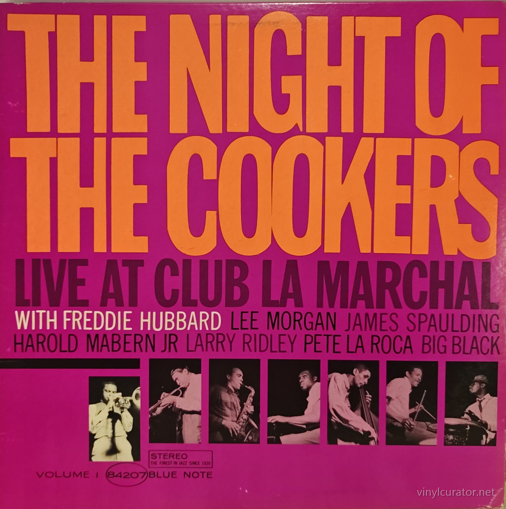
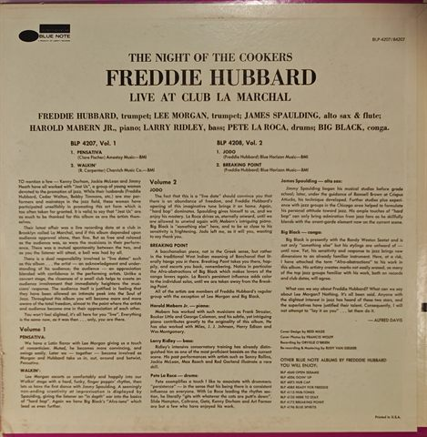
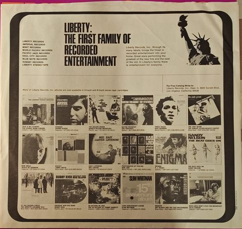
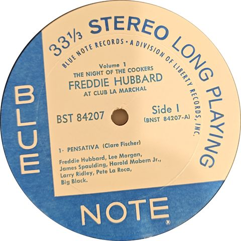
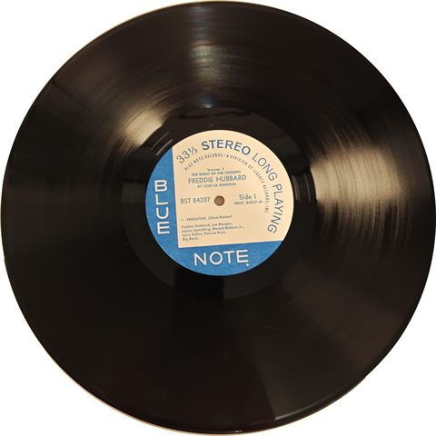
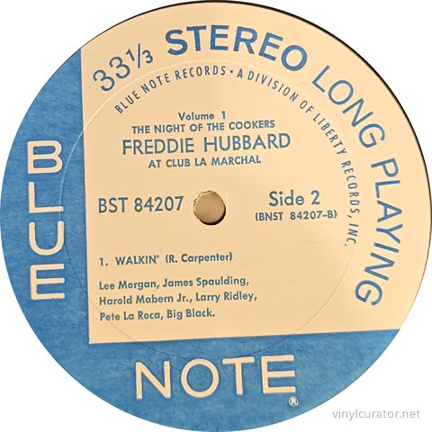
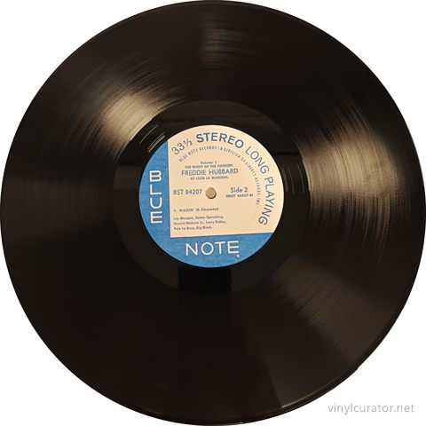
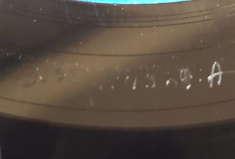
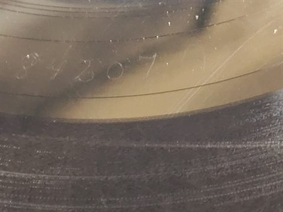
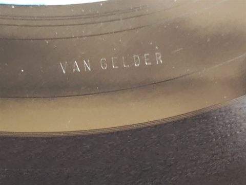
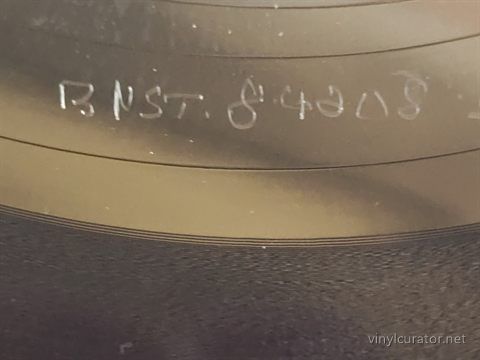
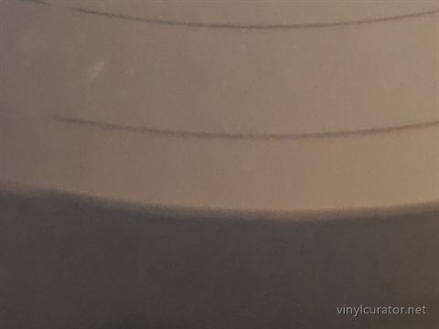
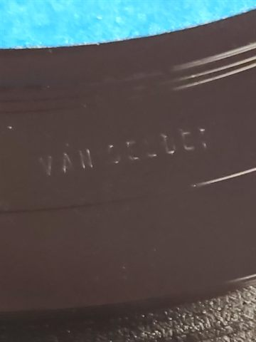
Pressing details
Label
Blue Note
Catalogue number
BST 84207
Year
c. 1966-70
Mono / Stereo
Stereo
Country
US
Format
LP
Speed
33 1/3 RPM
Genre
Jazz - Hard Bop
Producer
Alfred Lion
Musicians
Freddie Hubbard (trumpet), Lee Morgan (trumpet), James Spaulding (alto sax, flute), Harold Mabern Jr. (piano), Larry Ridley (bass), Pete La Roca (drums), Big Black (congas)
Matrix / Runout
Side A: BNST 84208A 84207A VAN GELDER
Side B: BNST 84028B 84207B VAN GELDER
Condition
Cover
NM-/NM-
Vinyl
EX+
Variant chronology
1965 - US mono original, BLP 4207, NY USA label
1965 - US stereo original, BST 84207, NY USA label, Van Gelder stamp
1966-70 - US Liberty stereo, blue/white 'A Division of Liberty Records' label, Van Gelder stamp (East Coast) <- this copy
1966-70 - US Liberty stereo, Bert-Co West Coast labels, no Van Gelder stamp
1971-73 - US blue/black 'b' label reissue, United Artists era
1970s-80s - Japan King/Toshiba reissues
This Pressing
2nd press (stereo, c. 1966-70) - Blue Note 'A Division of Liberty Records' blue/white label; Van Gelder stamp in dead wax = East Coast pressing from original Van Gelder metal.
The Album
Recorded live on April 9 and 10, 1965 at Club La Marchal in Brooklyn, The Night of the Cookers captures one of the great trumpet summits of the hard bop era: Freddie Hubbard, then 27 and fresh off his Blue Note breakthroughs, going toe-to-toe with Lee Morgan, his only real rival as the era's defining young trumpeter. The event grew out of a Brooklyn jazz-appreciation circle called 'Just Us,' a group of young women devoted to promoting the music, whose regulars - including wives of Hubbard, Cedar Walton and Billy Higgins - helped make the club a scene. Hubbard brought his working quintet (Spaulding, Mabern, Ridley, La Roca) and added Morgan and conguero Big Black for the occasion. Volume 1 is built on just two long performances: Clare Fischer's simmering Latin-tinged 'Pensativa,' which became a signature Hubbard vehicle, and Richard Carpenter's (the jazz pianist, not the pop star) 'Walkin',' a flag-waving hard bop workout where the two trumpets trade fire. Released as two volumes in 1965-66, the albums document the tail end of the golden Blue Note clubhouse era and remain essential documents of both trumpeters at peak form; critics have long ranked them among the finest live hard bop recordings, with the Hubbard-Morgan chemistry the stuff of legend.
Tracklist
Side 1
1. Pensativa (Clare Fischer)
Side 2
1. Walkin' (R. Carpenter)
The Label
This copy carries the blue-and-white 'BLUE NOTE RECORDS - A DIVISION OF LIBERTY RECORDS, INC.' label introduced after Liberty's mid-1966 acquisition of Blue Note, used on reissues and new releases through 1970. The 'Side 1' / 'Side 2' typesetting in upper-and-lower case identifies Keystone Printed Specialties label stock (Blue Note's original East Coast printer), as opposed to Bert-Co's all-caps 'SIDE' West Coast printing, which pins manufacture to an East Coast plant. That matches the VAN GELDER stamp in the dead wax: Liberty shipped original Van Gelder metal to East Coast plants (All Disc, Keel, Southern Plastics), while West Coast Research Craft copies were re-mastered from tape and lack the stamp. This copy therefore sits in the Liberty-era (1966-70) second-press tier - sonically from original metal but not a 1965 NY USA first issue, and the Liberty 'First Family of Recorded Entertainment' company inner sleeve corroborates that era.
Fidelity
East Coast Liberty pressing stamped from Rudy Van Gelder's original metal, so the cut itself is the genuine RVG master - collectors on Steve Hoffman forums and at LondonJazzCollector rate these Keystone-labeled Liberty pressings well above the West Coast Research Craft re-masters (no stamp, Bert-Co labels) and later Capitol-era reissues. The source, however, is Orville O'Brien's remote recording of the club date (Van Gelder handled only re-recording/mastering), so it lacks the presence and depth of a Van Gelder Studio session - energetic but somewhat raw, with a lively room sound. In the title's fidelity hierarchy it sits just below the 1965 NY USA original (identical metal lineage, earlier stampers) and comfortably above non-Van Gelder reissues; Japanese King/Toshiba cuts and modern reissues are the main alternatives.
Notes
Blue Note BST 84207 stereo, Liberty-era US reissue (c. 1966-70), not the 1965 NY USA first pressing. Decisive evidence: blue/white 'A Division of Liberty Records, Inc.' labels (post-1966 acquisition design), Keystone-style 'Side 1/2' typesetting = East Coast label stock, and the VAN GELDER stamp in the typed runouts confirming pressing from original Van Gelder metal. The Liberty 'First Family of Recorded Entertainment' company inner sleeve is consistent with the era. Note: the typed runouts ('84208'/'84028') appear to be transcription slips - the labels clearly print BNST 84207-A / 84207-B.
Documenting collections
I do this work for other people’s collections too — documenting a
collection record by record, researching individual pressings, and preparing
collections for sale or for insurance. If you have a collection you would like
documented, or a record you want identified properly, get in touch:
email
This record’s page: https://vinylcurator.net/albums/freddie-hubbard-the-night-of-the-cookers-live-at-club-la-marchal-volume-1/